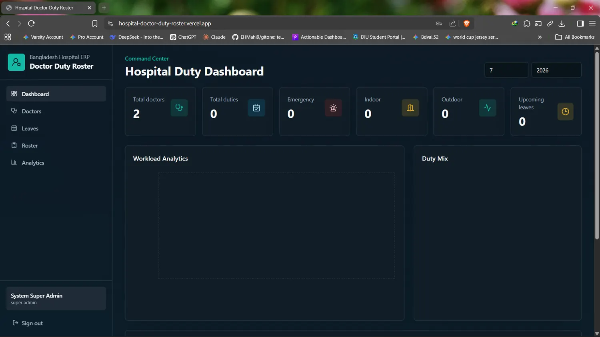
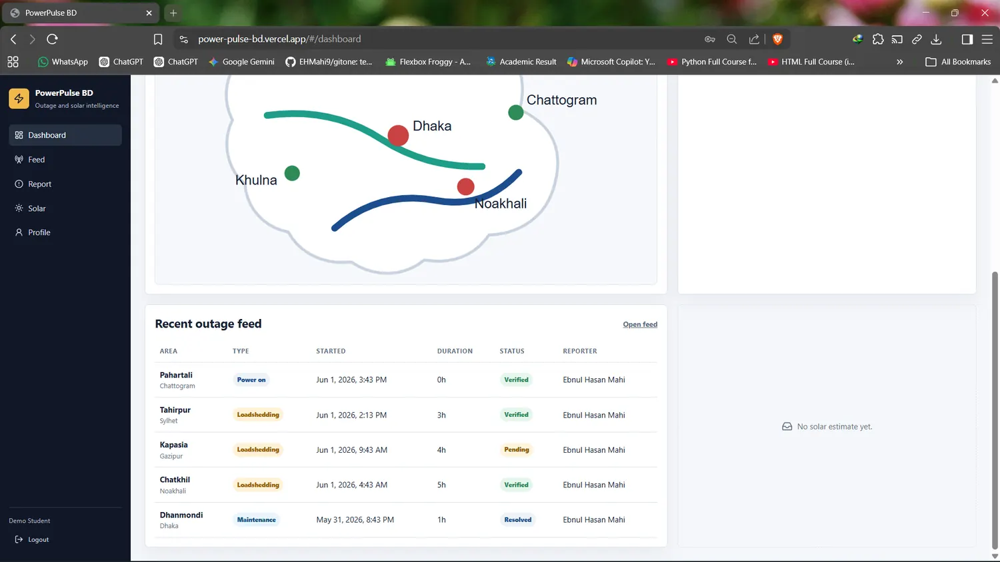
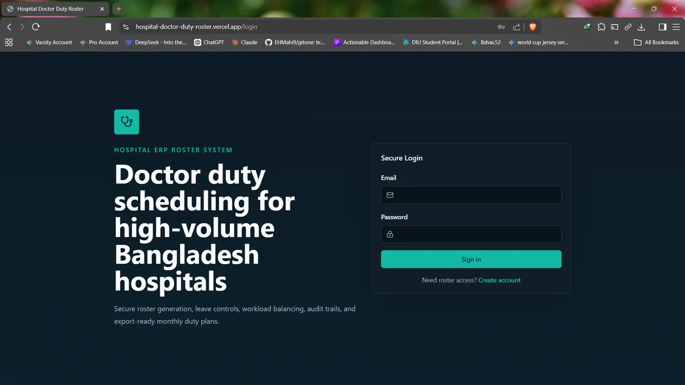
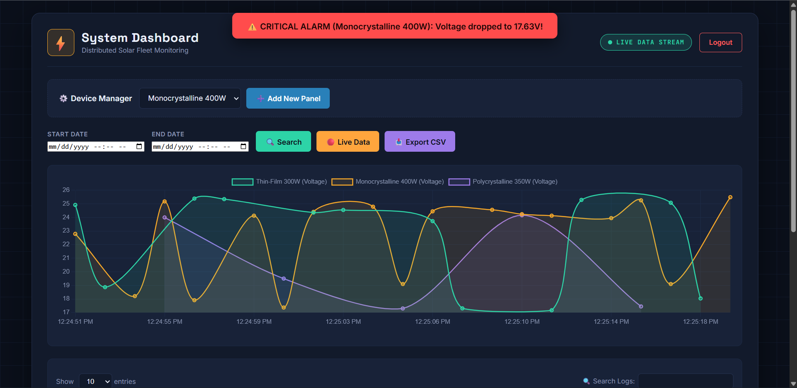
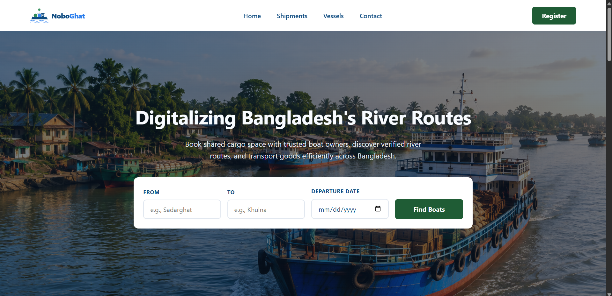

Available for internships and junior developer roles
Building reliable web products with full-stack fundamentals.
I am Ebnul Hasan Mahi, a Dhaka-based full-stack developer focused on clean interfaces, practical backend systems, and maintainable software that solves real problems.
About me
I care about how the pieces fit together.
My work sits at the intersection of practical web development, backend architecture, software fundamentals, and security-aware thinking. I like understanding the system underneath the interface: data models, authentication, API structure, deployment, and the user workflow around it.
I am currently pursuing Software Engineering and building projects that connect classroom fundamentals with production habits: clear naming, modular code, responsive UI, validation, accessibility, and iteration.
Backend thinking
APIs, authentication, schemas, and data flow before visual polish.
Interface quality
Layouts that are responsive, readable, and built around user tasks.
Fundamentals
OOP, data structures, algorithms, and disciplined problem solving.
Technical profile
A focused stack for building usable software.
Tools are grouped by how I use them in real projects, not as a long keyword list.
Full-stack web
React frontends with API-driven backends
Project work includes React/TypeScript interfaces, FastAPI services, Node.js/Express routes, REST APIs, JWT authentication, and Vercel deployment.
Data and backend
Data models, auth, and persistence
Programming
Strong Java and Python foundations
Frontend quality
Accessible, responsive UI systems
Featured work
Projects presented like products.
Each case study highlights the problem, my role, the solution, and the technical decisions behind it.

Healthcare scheduling
Live
Hospital Doctor Duty Roster
- Role
- Full-stack developer
- Problem
- Manual duty planning creates avoidable conflicts, unclear availability, and slow schedule updates.
- Solution
- A role-based scheduling application with staff dashboards, leave workflows, secure auth, and persistent shift data.
- JWT authentication and role-aware access
- Doctor scheduling and leave management
- PostgreSQL-backed data model with migrations

Energy monitoring
Live
PowerPulse BD
- Role
- Backend and dashboard developer
- Problem
- Energy data is difficult to interpret without clear status views, metrics, and outage context.
- Solution
- A modular Node.js and Express dashboard for solar calculations, battery metrics, outage logs, and visual reports.
- Service-oriented API routes for energy data
- Solar output and battery status visualization
- Dashboard, feed, admin, and report views

Java security
Academic
Data Privacy Vault
- Role
- Java and OOP developer
- Problem
- Sensitive user data needs controlled access, organization, and protection inside the application logic.
- Solution
- A Java vault that applies encapsulation and HashMap-backed storage to organize protected user records.
- Private internal storage through encapsulated methods
- User-to-data mapping with HashMap structures
- Security-focused OOP modeling and validation

Full-Stack Energy Monitoring
Live
HeliosTrack
- Role
- Full-stack developer
- Problem
- Monitoring distributed solar arrays requires real-time data visualization, reliable cloud storage, and immediate alerting without layout shifts or system crashes.
- Solution
- An enterprise-grade dashboard featuring live WebSocket streaming, an interactive Chart.js grid, and a virtual battery controller powered by a Node.js backend and Aiven MySQL.
- Real-time data streaming via Socket.io with dynamic UI updates
- Custom Virtual Battery logic, ROI calculator, and floating toast alerts
- Render-hosted Node.js API with Aiven Cloud MySQL integration

Logistics & Booking
Live
NoboGhat
- Role
- Full-stack developer
- Problem
- Inland waterway cargo transport suffers from manual booking, hidden pricing, and no real-time capacity tracking for small traders.
- Solution
- A decoupled Spring Boot and MySQL backend serving a vanilla JS frontend for role-based boat management, route discovery, and capacity-aware cargo booking.
- Role-based access control for Farmers, Traders, and Boat Owners
- Live cargo capacity tracking to mathematically prevent overbooking
- Stateless JWT authentication with secure BCrypt password hashing
RoadPulse
Dhaka traffic status Moderate congestion
Live alert
Incident awaiting verification
SE 231 capstone
In progress
RoadPulse
- Role
- System analysis and design team member
- Problem
- Commuters need reliable road-status information, while traffic authorities need one place to verify reports and publish timely alerts.
- Solution
- A crowd-sourced traffic monitoring platform where verified incident reports update a color-coded live road map.
- Guest map access plus role-based commuter, authority, and administrator workflows
- Incident reporting for accidents, congestion, blockages, hazards, and waterlogging
- Admin verification, public alerts, route advisory, and expiry of unverified reports
Workflow
How I move from idea to working software.
Understand
Clarify the user, constraints, core flows, and the data the system needs to manage.
Design
Sketch the interface, API shape, database model, and technical boundaries before implementation.
Build
Write modular, readable code with focused components, routes, services, and validation.
Verify
Test real flows, check responsiveness, improve accessibility, and reduce friction.
Education
Bachelor of Science in Software Engineering
Daffodil International University
Contact
Let's talk about internships, junior roles, or project ideas.
I am open to opportunities where I can contribute, learn from experienced engineers, and keep improving through real product work.